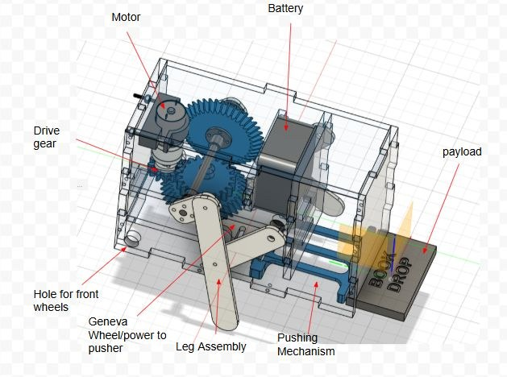
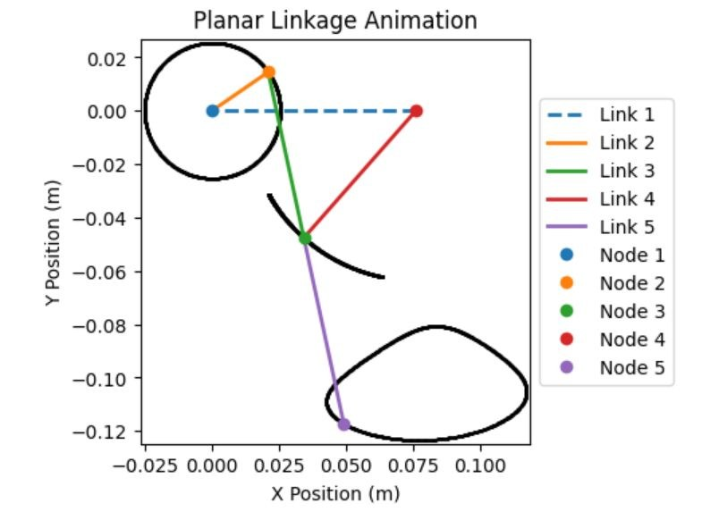
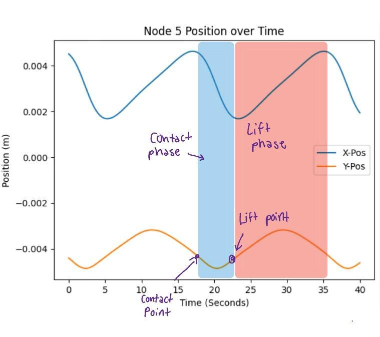
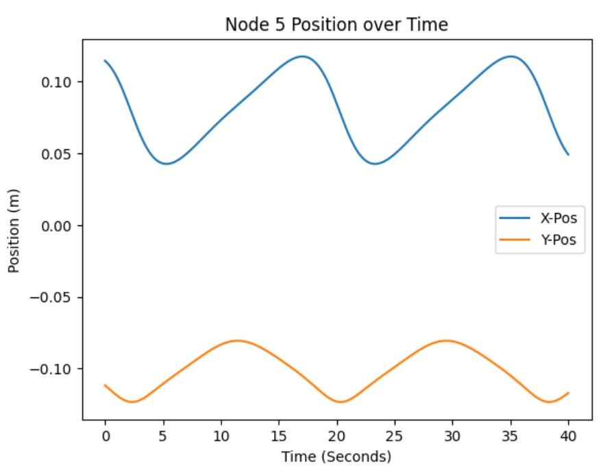
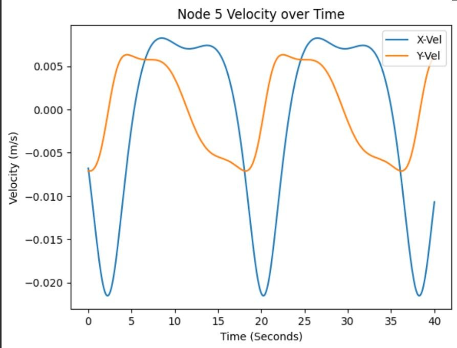
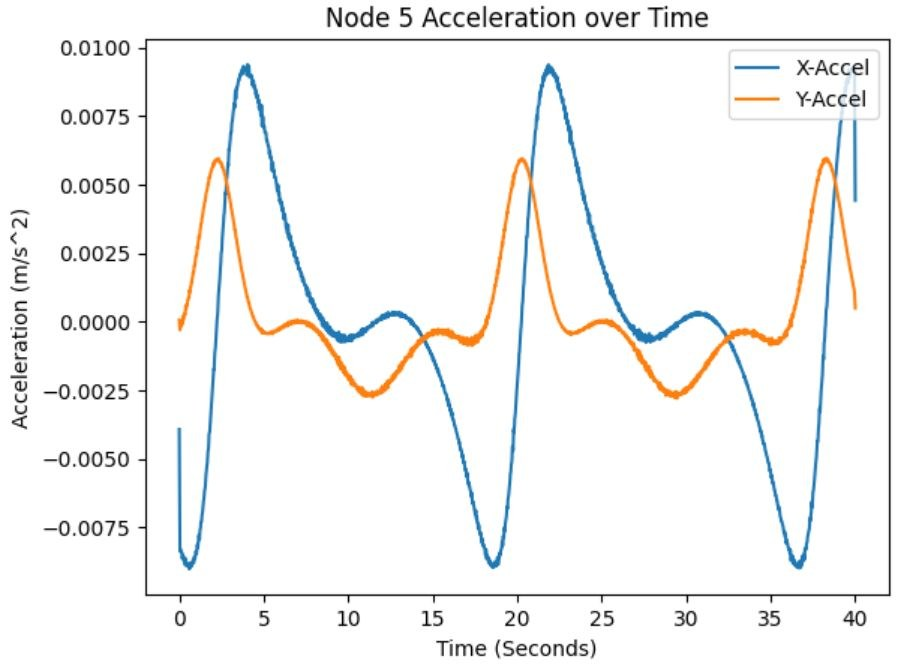
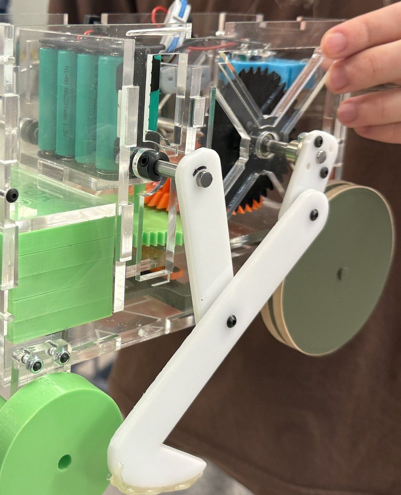

BookDrop is a walking robot that carries a tray of books through a library and drops each one off at its aisle, so librarians spend less time sorting returns. Two four-bar legs walk it forward, and a Geneva wheel driving a Scotch yoke pushes out one book every 2 meters.
- Course
- ME 370 · Mechanical Design I
- Date
- Fall 2025
- Team
- 4 students
- My role
- CAD design & dispensing mechanism
- Result
- 98% dispensing accuracy
The Problem
Library staff at Grainger juggle the front desk and student questions while also sorting returned books by aisle. We designed a robot for them: a book drop that carries the physical load and delivers each book to the right aisle on its own. Our design theme was colorful, friendly and creative, so it would feel at home in a busy library.
How It Works

Walking
- Two legs, each a simple four-bar linkage, driven by one motor
- Rear wheels carry part of the weight for stability
- Bevel gears turn the drive 90° to fit everything in the housing
Dispensing
- A Geneva wheel turns continuous motor rotation into timed, intermittent steps
- Each step drives a Scotch yoke, which slides a pusher to eject one book
- Timed to drop one book every 2 meters of travel
Gait Analysis
Before building, we modeled the leg linkage and ran a position, velocity and acceleration (PVA) analysis of the foot to shape the gait, then sized the gearing for our target speed.



Position

Velocity

Acceleration
- Stride length
- 3 in (76.2 mm)
- Crank speed needed
- 0.77 rad/s
- Motor speed (9 V, loaded)
- 4 rad/s
- Gear ratio
- 5.2 : 1
- Predicted speed
- 1.73 m/min
- β
- 0.28
Build

- Laser-cut acrylic housing, so the mechanism stays visible
- 3D-printed legs, crank, gears, Geneva wheel and pusher
- Eight batteries for about 9 V to the drive motor
Results
We refined the mechanism through repeated testing until it dispensed reliably, reaching 98% dispensing accuracy.
Team: Nicole Canfield, Danny Shannon, Amelia Burton and Shay Khanchandani.